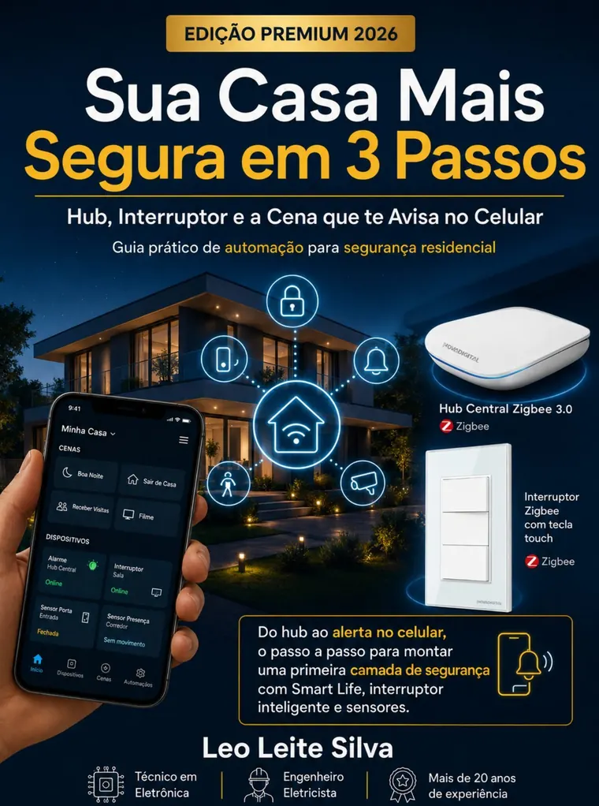

Do hub ao alerta no seu celular: o passo a passo para montar a primeira camada de segurança da sua casa com automação — usando Smart Life, interruptor inteligente e sensores que você mesmo instala.
📥 BAIXAR O GUIA GRATUITO AGORA
A maioria das invasões acontece justamente quando o imóvel parece desocupado. E os sistemas de alarme tradicionais cobram caro por algo que hoje você monta sozinho.
Luzes apagadas o dia inteiro anunciam para qualquer observador que não tem ninguém em casa.
Empresas de monitoramento cobram todo mês, para sempre — e você nem fica sabendo na hora quando algo acontece.
"Será que está tudo bem lá?" Sem um alerta em tempo real, você só descobre o problema quando chega.
Três passos práticos, com fotos, diagramas de ligação e checklist de instalação — escritos por quem faz isso há mais de 20 anos.
Configure o Hub Zigbee 3.0 em minutos e conecte tudo ao aplicativo Smart Life no seu celular — o guia mostra exatamente o que comprar.
Instale o interruptor inteligente com diagrama de ligação elétrica seguro (fase, neutro e retorno explicados) e checklist passo a passo.
Monte a rotina de presença que acende luzes sozinha e a cena de segurança que dispara alerta no seu celular se algo se mover.
Ao aplicar o guia, é isso que muda na prática:
Alerta em tempo real no celular quando um sensor detectar movimento ou porta aberta — esteja você no trabalho ou em viagem.
Casa com aparência de habitada: luzes acendem sozinhas em rotina, afastando olhares indesejados.
Zero mensalidade: o equipamento é seu, o controle é seu — sem contrato com empresa de alarme.
Instalação sem obra: nada de quebrar parede — o guia usa a fiação que já existe na sua casa.
Diagramas e checklist de eletricista: instruções de ligação seguras, revisadas por engenheiro eletricista.
Base pronta para expandir: depois da primeira camada, é só adicionar câmeras, sirenes e novos sensores ao mesmo hub.
Leo Leite Silva — Engenheiro Eletricista · Técnico em Eletrônica
São mais de duas décadas trabalhando com elétrica e eletrônica na prática. Este guia condensa essa experiência em um passo a passo que qualquer pessoa consegue seguir — com a segurança elétrica que só quem é do ramo pode garantir.
O que os leitores perguntam antes de baixar:
Não. O guia foi escrito para iniciantes: cada passo tem foto, diagrama e checklist. Onde há risco elétrico, o guia mostra como desligar o disjuntor e testar com segurança — e quando vale chamar um eletricista.
Não. A instalação usa a fiação e as caixinhas de interruptor que já existem na sua casa. O hub é plugado na tomada e conectado ao seu Wi-Fi.
O guia indica exatamente o que comprar (hub Zigbee e interruptor inteligente) — equipamentos acessíveis vendidos no Brasil, sem mensalidade. Você compra uma vez e o sistema é seu.
Sim. O aplicativo Smart Life é gratuito e está disponível para Android e iPhone. É por ele que você recebe os alertas e controla tudo.
Sim, 100% gratuito e com download imediato — sem cadastro e sem pegadinha. Ele é o primeiro passo do método completo "Sua Casa no Automático".
Daqui a alguns dias, sua casa pode estar acendendo as luzes sozinha e te avisando no celular sobre qualquer movimento. Tudo começa com este guia.
📥 QUERO MEU GUIA GRATUITO